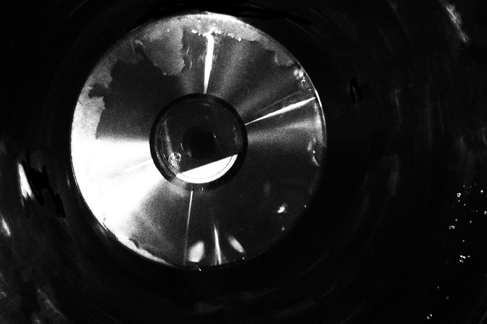
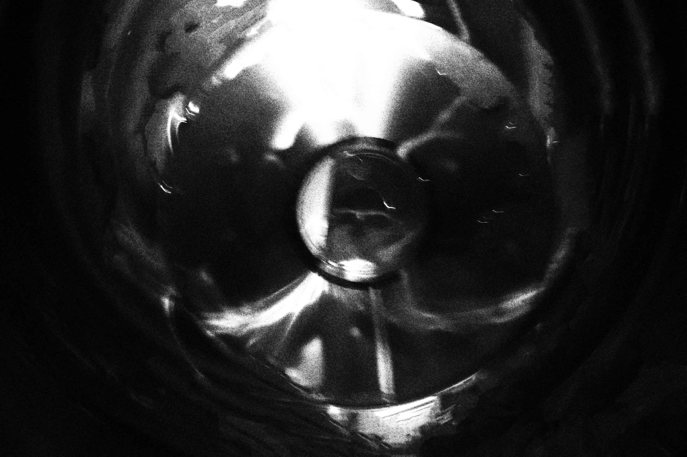
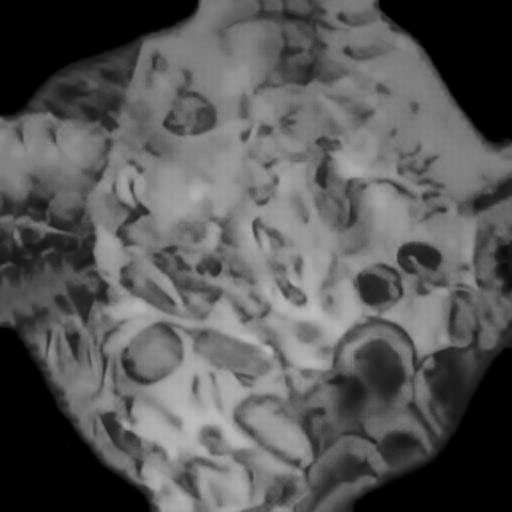

| 编号 | 名称 | 类别 | 等级 |
|---|---|---|---|
| B-16 | 编忆盘 | 小型物品 | HCL000657% |
| 详情 | |||
|
B-16是一张培养在 // ▇▇▇提取物释溶液中活化后的光盘。光盘选用的是于19▇▇年发行的▇▇▇的专辑。  培养2个小时的情况活化实验由▇▇▇和▇▇主持。在实验的两日内，B-16表面生长出细小的▇▇▇，它可以深入进任何接触它的活体内。  培养1天的情况实验时▇▇▇和▇▇不慎接触到B-16，其中▇▇死亡，其尸体于第▇日▇▇。▇▇▇则表现出高强度的抗性，只出现少数不适症状，未死亡。经血液抽查，发现其含有大数量B-16-C-01。
B-16-C-1的研究
B-16-C-01(以下简称C-01软组)是从B-16及其感染者身上可提取的一种软组。在显微镜下呈现出圆锥形结构。  B-16-C-01C-01软组并不会被抗原呈递细胞呈递，即不会引起免疫反应。经过大量研究，我们发现当小白鼠接触B-16时，其独有的细小的▇▇会将C-01软组送入内环境中。接着C-01软组会慢慢进行分裂并长出两对鞭软组。接续，C-01软组会利用鞭软组在内环境中移动。其移动难以捕捉，推测其原因可能是C-01软组的移动速度达到了0.39倍的光速。其速度会让其粉碎生物体内的分子，从而瘫痪生物生理活动。 感染C我-01软组的人员将在一周至三周内死亡，我们对此无能为力。 感染的早期症状为疼痛、失眠、无故恐慌。中期为无故出血，疼痛、系统部分功能缺失。晚期会感觉不到任何事物，所以不予以症状说明。但放心，C-01软组无传染性。 所有感染C-01软组的生物都于第▇日▇▇。 ▇▇▇▇年，发现B-16可与A-08产生作用。 2007年，B-16被封存于▇▇，不再被用于研究。 |
|||
HCL FOUNDATION
祝您工作愉快！
HCL FOUNDATION™
HCL FOUNDATION™